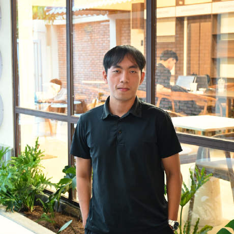

Tai Nguyen PhatSoftware engineer · indie makerMade in Vietnam ↗Say hello
Welcome ashore. Tap the grass to wander.
WASD / arrows to walk · E near a door
Drag to orbit · scroll or pinch to zoom
Ideas, code & a little island imagination.
Things I’ve made.
Welcome to my little maker island. Explore the projects here while the world loads.
FeedbackFun — customer feedback ↗SpecViewer — OpenAPI explorer ↗Echoling — language practice ↗MyndMap — AI mind maps ↗ListenFast — listening practice ↗